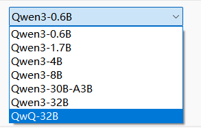

Highlights
- AI 捷径（AI Shortcuts）
- ING-DAPLink
- ING916XX 使用内部 RC 为主时钟时，如果要使用省电模式，则 RC 频率暂时只能配置为 24MHz。
- ING916XX 降低主频（HCLK）存在风险：低功耗电流异常，连接容易断开。
- ING918XX
platform_reset可能导致死机，请使用SYSCTRL_Reset()或替换为：
void platform_reset2(void) { __disable_irq(); AHB_SYSCTRL->RstSet &= 0x02; NVIC_SystemReset(); }
v8.5.2
1. 软件包
-
[修正] ING918: 程序启动时分配的栈空间过大
ING918 mini 和 noos_mini 软件包程序启动时（调用
app_main时）分配的栈空间过大， 超过了SYSCTRL_RESERVED_MEM_BLOCKS所指定的内存范围，如果在app_main内调用SYSCTRL_SelectMemoryBlocks(SYSCTRL_RESERVED_MEM_BLOCKS)会导致栈内容异常、死机。此问题由 v8.5.0 引入。如果不方便升级，可将
app_main内的SYSCTRL_SelectMemoryBlocks移动到其它位置， 如setup_profile。 -
[修正]
app_main内调用kv_init会导致死机此问题由 v8.5.0 引入。如果不方便升级，可将
app_main内的kv_init移动到setup_profile。
2. 库函数
-
[更新] ING916 USB: 默认使用最大 Tx 驱动能力
可以解决连接到部分主机无法识别的问题。
2. 工具
-
[新增] AI 捷径：升级到 QWen3 模型
支持 QWen3 6 亿参数 到 320 亿参数等多种规模。使用 CPU 或者集成显卡时， 推荐使用 1.7B 到 4B 规模的模型；如果内存容量为 32GB 或更多，则可以使用 30B-A3B 小型 MoE 模型。

v8.5.1
1. 软件包
-
[修正] Controller: 意外发送 LL_PING_REQ
当已加密的连接断开后，PING 定时器保持运行。当重新连接后，如果连接未加密，定时器超时后会意外触发 LL_PING_REQ，不符合规范。现已修正。
-
[修正] Controller: 加密流程的处理
当加密流程被对方通过 LL_REJECT_EXT_IND 拒绝（如对方删除了配对信息）时，Controller 未恢复正常的通信状态，导致无法通信、
gap_disconnect不生效等现象。现已修正。如果对方通过 LL_REJECT_IND 拒绝，Controller 工作正常。
v8.5.0
1. 软件包
-
[更新] 内置 FreeRTOS 的软件包允许替换 RTOS
现在内置 FreeRTOS 的软件同 NoOS 软件包一样可以通过
app_main返回gen_os_driver_t指针。 当该指针不为空时，内置的 FreeRTOS 被替换，协议栈将使用gen_os_driver。此后，应用显然也不能使用内置的 FreeRTOS。const gen_os_driver_t gen_os_driver = ...; uintptr_t app_main() { ... return (uintptr_t)&gen_os_driver; } -
[新增]
platform_get_rtos_heap_mem这个函数返回内置 FreeRTOS 的堆空间。当替换内置的 FreeRTOS 后，开发者通过此 API 获取该内存空间。
通常情况下，可以把这块空间作为堆注册到外部的 RTOS。参考 Peripheral Console (RT-Thread)。
-
[新增]
platform_pre_suppress_cycles_and_sleep_processing从 v8.5.0 开始，睡眠时间以低速实时时钟的周期为度量单位。 为保持兼容性，原有的
platform_pre_suppress_ticks_and_sleep_processing仍然存在， 但建议改用platform_pre_suppress_cycles_and_sleep_processing。例如：原代码：
uint32_t ticks = platform_pre_suppress_ticks_and_sleep_processing(expectedTicks);更新为：
#define SYS_CLOCK_CYCLES_PER_TICK .... uint32_t cycles = platform_pre_suppress_cycles_and_sleep_processing( expectedTicks * SYS_CLOCK_CYCLES_PER_TICK); uint32_t ticks = cycles / SYS_CLOCK_CYCLES_PER_TICK;
2. 库函数
- [修正] ING916 USB: EP0 OUT 概率性故障
2. 工具
-
[新增] AI 捷径（AI Shortcuts）
详见 使用 AI。
-
[修正]
rtt_logger.py: 有时会抓取多余的数据 -
[更新] Downloader (GUI/Python)：配合 ING-DAPLink 实现自动下载
使用 ING-DAPLink 时，点击主界面的 “Load” 按钮相当于按下 ING-DAPLink 上 “Load” 按钮，可进入下载状态； 运行
icsdw.py脚本时，可自动进入下载状态。